Analise tecnica - Relatoria ANVISA
Sonda Uretral de Alivio impregnada com Nanoparticulas de Prata
Analise tecnica completa como Agente Senior Relator da ANVISA, estruturada em blocos de investigacao regulatoria, nanotecnologica, toxicologica, antimicrobiana, fabril e pos-mercado.
{kind=link}
Investigacao sistematica previa
Antes de responder ao requerente, a relatoria conduz uma investigacao sistematica dividida em blocos tecnicos. O objetivo e verificar se o dossie sustenta a seguranca, eficacia, qualidade, rastreabilidade e conformidade regulatoria de um dispositivo medico com nanomaterial funcional.

Bloco 1 - Classificacao e enquadramento regulatorio
O produto e apresentado como sonda uretral de alivio. A primeira verificacao e identificar o material base do cateter, como latex, PVC, silicone ou poliuretano, pois a matriz polimerica influencia compatibilidade, liberacao, estabilidade e desempenho mecanico.
A impregnacao por nanoparticulas de prata constitui a principal inovacao tecnologica. Portanto, o produto deve ser tratado como tecnologia nova no contexto da RDC 185/2001, com dossie completo e sem possibilidade de registro por simples equivalencia tecnica.
- Qual e o material base do cateter e sua norma tecnica aplicavel?
- Ha precedente de registro na ANVISA para produto similar?
- O requerente pretende enquadrar a tecnologia como equivalente ou como inovacao?
- Ha nota tecnica GGTPS/ANVISA ou orientacao especifica sobre nanotecnologia aplicavel ao caso?
A relatoria consulta precedentes de registro na ANVISA, regulamentos tecnicos vigentes sobre nanomateriais em produtos para saude e a ISO/TR 10993-22, referencia central para biocompatibilidade de nanomateriais em dispositivos medicos.
Bloco 2 - Caracterizacao das nanoparticulas de prata
Este e o no central da analise. A variacao nos parametros nanotecnologicos pode alterar completamente o perfil toxicologico, a reatividade biologica, a migracao e a eficacia antimicrobiana do produto.
Parametros fisico-quimicos obrigatorios
- Tamanho medio das nanoparticulas em nm e distribuicao granulometrica, incluindo PDI.
- Forma e morfologia: esfericas, triangulares, bastonetes ou outra geometria.
- Concentracao superficial em ug/cm2 e concentracao total por unidade do produto.
- Metodo de impregnacao: coating superficial, incorporacao na matriz polimerica ou conjugacao quimica.
- Taxa de liberacao de ions Ag+ in vitro em simuladores de urina nos tempos 1h, 24h, 72h, 7 dias e ate o fim da vida util declarada.
- Estabilidade das nanoparticulas apos esterilizacao por EtO, radiacao gama ou vapor umido.
- Potencial zeta como indicador de estabilidade coloidal residual.
- Presenca de agentes estabilizantes como citrato, PVP ou PEG, com biocompatibilidade individual.
A relatoria compara dados de tamanho e concentracao de NPAg em PubMed e Embase. Nanoparticulas abaixo de 10 nm tendem a penetrar membranas celulares com maior facilidade; acima de 100 nm podem se comportar mais proximamente a prata coloidal convencional. Essa diferenca e regulatoriamente relevante.
Bloco 3 - Biocompatibilidade e toxicidade
Este e o bloco mais critico. A prata nanoparticulada apresenta propriedades toxicologicas distintas da prata ionica convencional ou da prata metalica bulk. Nao se aceita extrapolacao direta de dados de prata nao-nano para NPAg.
Como a sonda tem contato prolongado com mucosa urogenital e pode envolver contato com sangue em pacientes cateterizados, aplica-se a matriz da ISO 10993-1 para contato com mucosa e duracao prolongada maior que 24 horas.
Ensaios minimos esperados
- Citotoxicidade, ISO 10993-5, com celulas uroteliais humanas, nao apenas fibroblastos L929.
- Sensibilizacao, ISO 10993-10, por GPMT ou teste de Buehler.
- Irritacao e reatividade intracutanea, ISO 10993-10 e ISO 10993-23.
- Toxicidade sistemica aguda, ISO 10993-11.
- Toxicidade subcronica ou subaguda, ISO 10993-11, especialmente para uso repetido.
- Genotoxicidade, ISO 10993-3: Ames, micronucleo in vitro e micronucleo in vivo.
- Implantacao, ISO 10993-6, se houver potencial de permanencia tecidual de NPAg.
- Toxicocinetica de nanoparticulas, incluindo distribuicao e acumulo em orgaos-alvo, especialmente rins.
- Avaliacao de argiria local e sistemica, com estudo de biodistribuicao.
Questionamentos especificos ao requerente
- Os testes foram realizados com o produto final apos esterilizacao ou apenas com extratos das nanoparticulas isoladas?
- Os extratos foram preparados conforme ISO 10993-12, nas condicoes reais de uso clinico?
- Os dados de toxicidade sao de NPAg com o mesmo tamanho, morfologia e revestimento superficial do produto submetido?
- Ha estudo proprio do requerente ou apenas dados bibliograficos de outras formulacoes?
Como nao ha limiar toxicologico bem estabelecido pela ANVISA para NPAg em dispositivos de contato mucoso, a abordagem regulatoria deve ser conservadora e exigir dados proprios do produto final.
Bloco 4 - Eficacia antimicrobiana
A razao de existir das NPAg no produto e reduzir infeccao do trato urinario associada a cateter. Essa reivindicacao precisa ser sustentada com rigor cientifico e metodologia adequada.
- Quais sao exatamente os claims declarados: reduz colonizacao bacteriana, previne ITU ou possui acao antimicrobiana?
- Os testes antimicrobianos foram feitos na superficie do cateter ou apenas com extratos?
- Foi usado teste de aderencia bacteriana em superficie, como ISO 22196 adaptado ou ASTM E2180?
- O painel contempla E. coli, Klebsiella pneumoniae, Pseudomonas aeruginosa, Enterococcus faecalis, Candida albicans e Staphylococcus epidermidis?
- Foram avaliadas formacao e inibicao de biofilme?
- A atividade antimicrobiana se mantem ao longo da vida util declarada?
- Houve avaliacao de resistencia apos exposicao subinibitoria as NPAg?
- Existe estudo clinico prospectivo, randomizado e controlado demonstrando reducao de ITU em pacientes?
A diferenca entre evidencia in vitro e eficacia clinica e critica para limitar ou autorizar os claims de rotulagem e publicidade.
Bloco 5 - Desempenho do dispositivo e qualidade de manufatura
- O produto atende integralmente a ABNT NBR ISO 8669-2 ou norma tecnica especifica aplicavel ao tipo de sonda?
- Todos os requisitos dimensionais, resistencia a tracao, vedacao do balao se aplicavel e ausencia de rebarbas estao documentados?
- Qual e o processo de esterilizacao e qual o impacto comprovado sobre as NPAg?
- Ha estudo de estabilidade pos-esterilizacao com caracterizacao antes e depois do processo?
- O fabricante possui BPF vigente conforme RDC 16/2013, validada no DATAVISA?
- Qual e o prazo de validade declarado e qual estudo de estabilidade o fundamenta?
- O estudo monitora concentracao de prata superficial, oxidacao e atividade antimicrobiana residual?
- Existe rastreabilidade de lote das nanoparticulas como insumo critico, incluindo fornecedor e CoA?
Bloco 6 - Rotulagem, instrucoes de uso e vigilancia pos-mercado
- A rotulagem cumpre RDC 185/2001 e RDC 36/2015?
- Ha mencao explicita a presenca de nanoparticulas de prata e suas advertencias?
- A IFU contempla populacao-alvo, alergia a prata, tempo maximo de permanencia e descarte adequado?
- As NPAg foram consideradas no plano de residuos de servico de saude, incluindo risco ambiental?
- Ha plano de tecnovigilancia pos-registro para monitoramento ativo de eventos adversos?
- O plano cobre hipersensibilidade a prata e argiria local?
Pesquisas prioritarias antes do parecer
Antes de redigir exigencia ou parecer definitivo, a relatoria realiza:
A pesquisa busca notificacoes de eventos adversos, recalls, alertas internacionais, precedentes regulatorios, dados de seguranca pos-mercado, metanalises sobre cateteres impregnados com prata, estudos sobre resistencia bacteriana a NPAg e criterios de avaliacao internacional para nanomateriais em dispositivos medicos.
Sintese do posicionamento como relator
A existencia de nanoparticulas de prata em um dispositivo que ficara em contato direto e prolongado com mucosa urogenital vascularizada, potencialmente em pacientes com comprometimento renal, oncologicos ou imunossuprimidos, eleva substancialmente o grau de exigencia regulatoria.
O dossie padrao para sonda uretral convencional e condicao necessaria, mas insuficiente. O requerente deve apresentar modulo nanotoxicológico completo e independente, com dados proprios do produto final, nao extrapolados de literatura.
A ANVISA tem o dever legal, nos termos da Lei 6.360/1976 e da Lei 9.782/1999, de assegurar que o produto seja seguro, eficaz e de qualidade antes de chegar ao paciente. A inovacao tecnologica nao reduz esse dever; ela o amplifica.